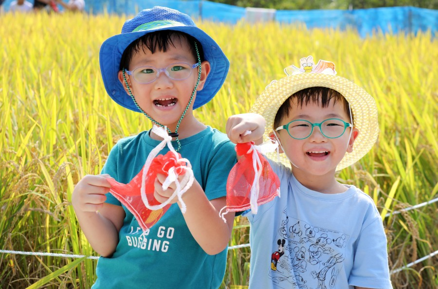
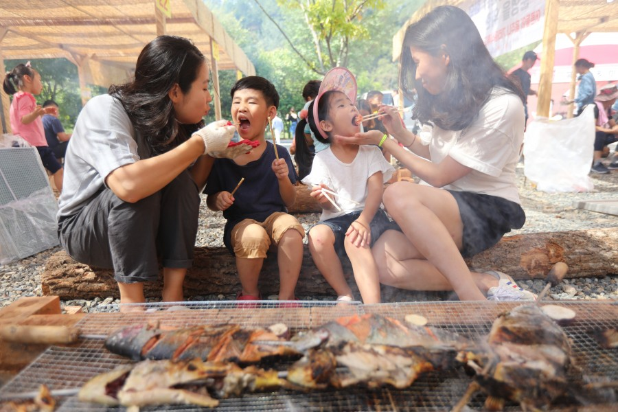
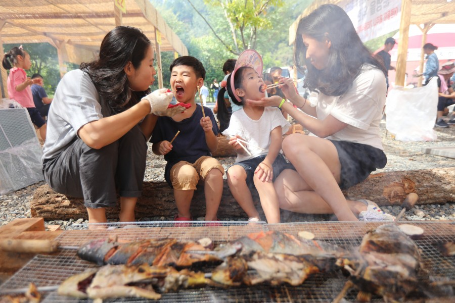
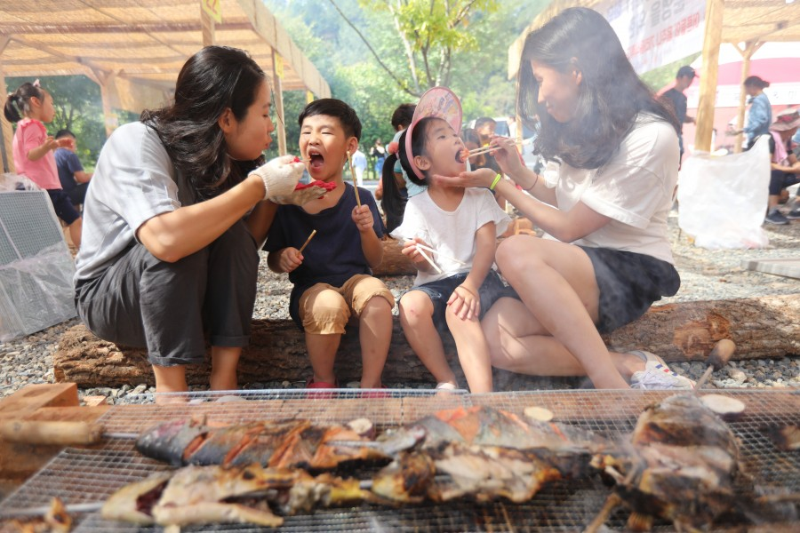
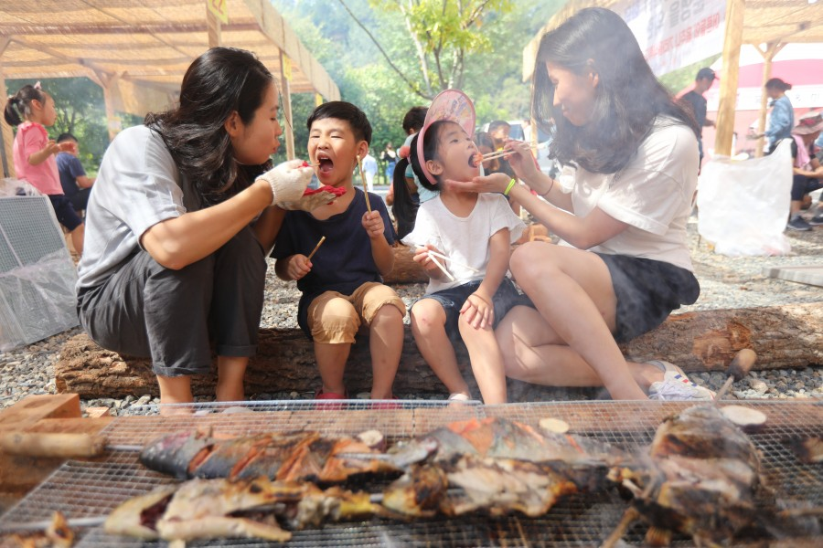

 



투명한 가을하늘과 아련한 기억이 불어오는 계절 청정완주의 신선한 로컬푸드와 주민들의 노력이 만들어낸 흥겨운 축제마당. 완주와일드푸드축제에 여러분을 초대합니다. “WILD-FOOD, WILD-FUN, WILD-LIFE” 재밌고, 독특한 콘텐츠를 더욱 강화하여 관광객 모두가 흥겹게 즐기는 축제~ 오는 9월 완주에서 마음껏 즐길 수 있는 최고의 와일드한 페스티벌을 준비했습니다. 흥겨운 축제마당에 참여하여 맛있고 즐거운 추억을 만들어 보시기를 바랍니다. 짜릿한 열정, 동심의 추억이 가득한 완주로 놀러오세요~
완주시는 전라북도의 시, 군들 가운데 면적이 가장 넓고, 전라남/북도 군 단위 지자체 가운데 인구가 가장 많다. 관내에 3읍 10면을 두고 있다. 완주군 인구의 절반 가까이는 삼례읍과 봉동읍에 집중되어 있는데, 오랫동안 인구 수에서 삼례읍이 1위, 봉동읍은 만년 2위를 랭크했지만, 봉동읍에 전주 3공단이 조성되고 신시가지가 형성되면서 지금은 역전. 근래에 인구 2만 명을 넘어 고창읍, 부안읍과 맞먹는 규모로 증가했지만, 구 읍시가지와 신시가지가 상당히 떨어져 있어서 그다지 실감이 나지 않는다.
다양한 건강먹거리 “와일드푸드” 가공·조미를 최소화한 자연음식~ 건강하고 신선한 먹거리에 기반을 두고 있습니다. 와일드푸드는 건강한 먹거리의 다른 이름~ 와일드음식 감자삼굿, 참나무숯불구이와 연잎 밥, 대나무속 돼지구이, 메추리 숯불구이, 가마솥 닭죽, 징거미, 피라미 튀김 이색음식 꿀벌애벌레, 개구리튀김, 메뚜기 구이, 돼지코 요리, 거저리 빼빼로&피자, 달팽이아이스크림, 글로벌와일드푸드존 향수음식 번지없는 주막, 뻥튀기와 밥풀 과자, 부뚜막과 시루떡, 단호박 식혜